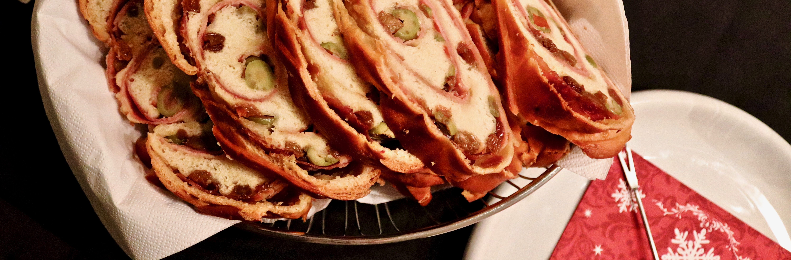
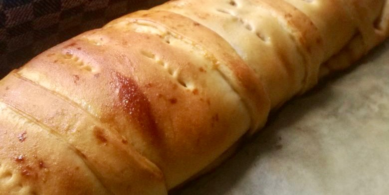

Pan de Jamón
Hi again! This time I wanted to share this recipe as some of you guys wanted :) I used to prepare this with my mother back in Venezuela every Christmas season, so it’s quite a nice tradition for these festive days, and also an incredibly tasty one!
Maybe it might sound weird to combine ham, bacon, olives and raisins all inside one bread, but trust me, it’s awesome haha The mixture of salty and sweet flavours make this recipe quite addictive, so be cautious :D
Anyway, long story short, here are the ingredients you’ll need!
Ingredients
- 1/2 Kg Wheat flour (+ some extra for kneading the dough)
- 1/2 Tbsp fresh yeast
- 100g Butter
- 1 Whole egg + (1/2 egg for decoration)
- 80g Brown sugar
- 2 tsp Sea salt
- 200ml Milk (I used 1,5% fat)
- 150gr Bacon strips
- 350gr Ham
- 100-200gr Green olives filled with red pepper
- 50gr raw brown cane sugar (unprocessed) (Known as papelón in Venezuela)
- 100-200gr raisins

Now the how to prepare this crazy thing?
I tried to be quite specific, but keep in mind that different types of flour and yeast might make the proportions to vary a bit, so might end up with some extra dough, which can be used for decorating the bread or even making another mini bread :) Zero waste here!!
Preparation
- Mix gently the yeast with 1/2 cup of warm water and 1 Tbsp of the brown sugar and let it rest for about 5 minutes in a dark warm place (inside the oven, for example)
- In the meantime start heating the milk, together with the salt, brown sugar and butter. Mix until all ingredients are dissolved but never to the point of boiling the milk.
- Let the raisins soak in water and prepare the raw brown sugar by dissolving it with 1/3 cups of boiling water.
- Put the flour in a big bowl and start adding the yeast in the middle, bringing the dough together. Immediately add the warmed milk.
- Keep mixing with a wooden or plastic stick until it starts to become homogeneous, and then add some flour in a flat surface to start kneading the dough with your hands.
- When it stops sticking to the fingers, let it rest for about an hour covered with a warm cloth in a big bowl. You can also add some flour to the bowl before putting the dough so it doesn’t stick while it raises.
- After an hour it should have doubled its size, then proceed to extend the dough in a flat surface, making a rectangle. Try to make it thin enough.
- Spread 1/4 of the dissolved raw sugar over all the flat dough and start layering the ingredients. First put the ham, then add the bacon strips and then spread evenly the olives (whole or chopped) and raisins.
- Proceed to roll the bread from left to right, without pressing it hard to avoid it from breaking and preventing the ingredients to spread outside.
- Fix the corners and add decoration if you want to with some of the dough remainings. Pinch the whole bread with a fork to allow the air to come out while it’s in the oven, so your bread won’t take a weird form later.
- Let it rest for another hour again covered with a warm cloth.
- Turn on the oven at 180°C and in the meantime add the half egg to the raw sugar mixture and beat it well.
- Paint all the bread with the egg and sugar mixture and put in the oven!
- Wait for about 45-70 min or until a stick comes out clean when pinching the bread in the middle.
- Let it cool for a while and enjoy!!!
Hmmm!!!
Let me know if you make this at home and I truly hope you enjoy this dish as much as I do!
Next time I’ll try to take more (and better) pictures to illustrate the whole process in a simpler way, I’m still figuring out how to take good pics with new camera, not so easy as I thought!
Let’s keep in touch for next posts, and make sure to subscribe at the end of this page so you can get a notification each time I post something new (which is not so often so it won’t be spammy ;)) You can follow me on Instagram as well, where I’m posting more frequently recipes on my Instastories.
I would love to hear more from you :)
What’s your favourite Christmas dish from your homeland?
Gallery